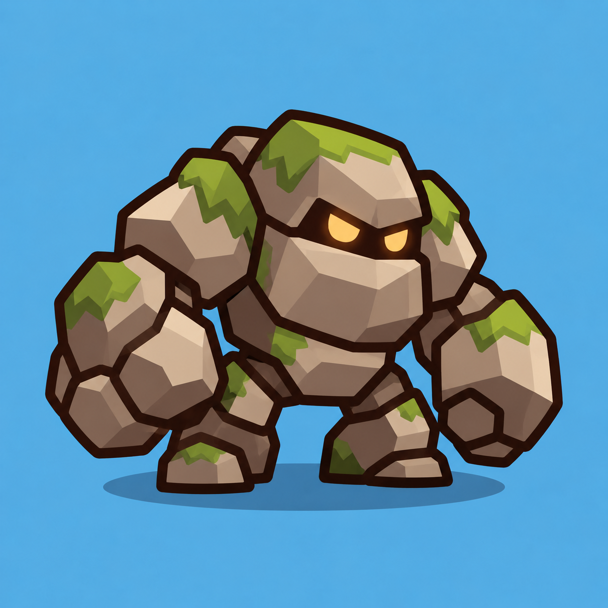
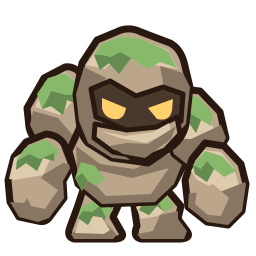
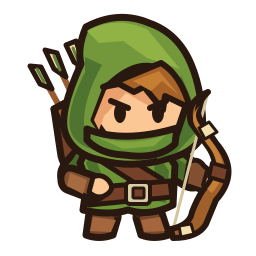
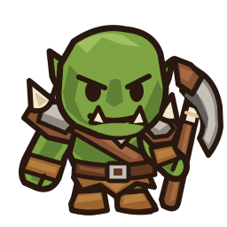

Каменный гигант по согласованному референсу. Цвет сложности меняет только мох; камень и глаза сохраняют цвет.


На экране шириной 390 px
Фактический масштаб арены, без увеличения мелкого рисунка. Это примерка art; положение полоски здоровья проверим при интеграции.
Одинаковые клетки и масштаб. Goblin учитывает принятое уменьшение на 20%; размеры Orc и Golem сохранены.


Пороги 120 / 240 / 480 / 960 / 1920 HP. Камень, тёмные стыки и жёлтые глаза остаются прежними. Здесь показана SVG-примерка цветов.
| Часть | Pivot | Слой |
|---|
Восемь жёстких частей. Плечи, локти, бёдра и шея имеют скрытый overlap. Динамические стыки проверим после приёмки рисунка.
Внешний вид принят. Rigid cutout rig и анимации созданы в Godot для отдельной приёмки.